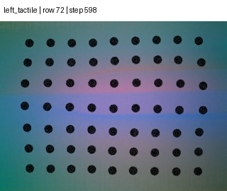
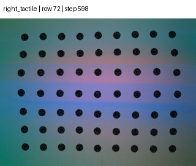
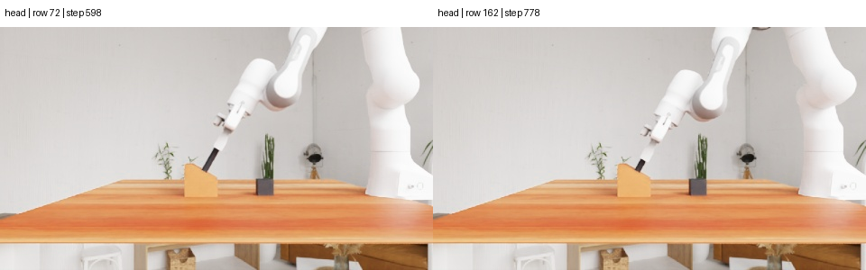
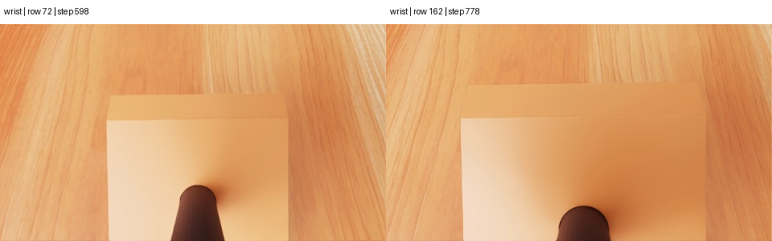

独立复现 · 2026.10.26更新
让机器人不只“现在摸到”，
还记得上次怎样摸对。
Tactile-ETA 把成功示范压缩成“动作—视觉—双指触觉”的短记忆，交给冻结的通用模型在执行时参考。我们已从离线核心链推进到真实 Codex／MCP 原生在线闭环，并取得一次 Insert Tube 原生成功；下方同时保留早期失败快照。
原生在线闭环已实测，并取得一次任务成功成功运行：6段模型动作、14控制步、15帧与6份触觉历史；短试跑失败与所有初始化尝试分别保留，不代表论文成功率复现
以上是本机独立审计数字；下文的成功率用橙色“论文报告”标识。
01 · 方法拆开看
它没有训练一套新策略，
而是给现有模型一本“触觉小抄”。
关键不是单独多给一张触觉图，而是把成功示范按动作切开，告诉模型“当时怎样动、看见什么、两根手指经历了什么变化”。
按动作切段
每次专家动作形成一个片段。片段里保存动作前后相机、末端位姿变化、夹爪变化和左右触觉。
边界来自记录的 action id / tag保留首尾与峰值对
首尾一定保留；若中间触觉变化超过阈值，再加入变化最大跳变前后的相邻两帧。
每只手指每段最多 4 个时刻边做边查记忆
模型先读示范，再用当前视觉、触觉、机器人状态和执行反馈选择 move_to 等工具。
真实示范显微镜
同一个动作段，只留下四个触觉时刻
下面来自作者公开的 Insert Tube 第 0 条示范、第 4 个动作段。左右手指使用同一组时间索引：动作起点、最大变化前、最大变化后、动作终点。
S = {起点, 峰前, 峰后, 终点}
只有最大归一化变化 ≥ 1 时才加入峰值对；否则只留首尾。相同索引同时用于左右触觉，避免两侧时间错位。
当前选择
动作起点 · step 598

Δ 是本页为观察方便计算的“相对首帧平均 RGB 差”，不是论文的 patch-motion 选择分数。真实选择器使用 3×4 patch 网格、75 分位位移与低质量时的图像差回退。
同时对齐的视觉边界 展开


通俗版
你可以把它想成教人插钥匙：只说“往前、旋转、再拔”不够；只让他看现在手指受力也不够。更有用的是给一段成功经验：旋到这里时左手指纹路突然变形，专家又多旋了一点，随后反向并上提。模型不是背坐标，而是借这段因果顺序判断当前应该继续、退回，还是横向微调。
02 · 论文报告
历史触觉经验带来提升，
但不是每个任务都提升。
论文主表15.75% → 24.00%同样的当前视觉 + 当前触觉；差别是示范里有没有触觉
四个 UniVTAC 任务 · 每格 100 次
成功率，单位 %。鼠标或键盘聚焦条形可查看数值。
视觉＋动作示范Tactile-ETA
看清反例：Lift Can 从 3% 变为 2%，说明“加触觉记忆”不是万能增益；表示方式、任务和模型本身都决定结果。
表示方式消融 · Lift Bottle
更多帧，反而可能更糟
全部触觉帧只有 2%，精选 4 帧以内达到 36%。论文把它解释为上下文组织方式很关键；这组结果本身不能证明唯一因果机制。
真机 · 每格只有 5 次
一条示范：0/5 → 3/5
白板擦拭与薯片抓取各 3/5。对照加入的是整条视觉＋动作＋触觉示范，不能把全部提升单独归因于历史触觉；成功由人工判断，60% 应读作早期可行性证据。
示范条数 · 四任务平均
两条比四条更好
上下文不是越长越好。四条示范让 Pull Out Key 上升，却让 Lift Bottle 从 36% 降到 2%。
模型消融 · Lift Bottle
同一方法也依赖底模
论文正文称主模型为 GPT-6，附录称 GPT-6 Astra，开源配置写 gpt-6-astra；作者没有公布不可变模型快照或三者的正式映射。
!
“精细力控”要准确理解
论文自己说明：当前系统主要在动作段之间利用触觉来做下一步决策；动作内部仍由底层控制器执行。它展示了接触敏感的闭环纠偏，但还不是 100–1000 Hz 的连续触觉伺服或显式力矩控制。作者也把“更快的动作内触觉反馈”列为未来方向。
当时证据等级COMPONENT
TESTED10月21日：场景＋双触觉初始化，重置阻塞
TESTED10月21日：场景＋双触觉初始化，重置阻塞
源码身份
固定上游提交并核对工作树
e7e5efbd42d3…公开示范包
244 / 244 图像可解码，61 个动作段文本与图像标签一一对应
8 条成功示范；左右触觉共享时间索引；每段保留 2–4 帧算法与提示合同
峰值选择独立转写与上游实现一致，5 项 prompt / tool 约束成立
包含先读示范、禁止复制绝对坐标、当前触觉可缺失、原生结果中性反馈作者测试
python -m pytest：8 / 8 通过
直接 uv run pytest 会因根目录未进入导入路径而在收集阶段失败；两种入口都保留server-b 原生依赖
Isaac 5.1／Lab 2.3／CUDA 12.6／TacEx／UIPC／cuRobo 已按固定版本加载
8×L40S 可见；GPU scatter 计算与 5 个 cuRobo 原生扩展通过原生场景与触觉启动
Insert Tube 场景、UIPC 物体和左右 GelSight 均完成初始化
v25、v28、v29 均到达“Completed setting up the environment”；显式使用 Torch 触觉后端并隔离重复 Vulkan ICD重置、观测与动作
首次关节重置失败；0 可评估 episode、0 模型决策、0 机器人动作
PhysX 索引期望 CPU，Isaac Lab 传入 cuda:0；兼容补丁暴露更深的混合设备状态后已撤回Sub2API 模型门禁
目录与认证可达，Opus 5.5 和两个 GPT 对照均无成功推理
Opus 别名曾出现但返回 502／503，最终目录已不含 Opus；目录中的 gpt-6-astra 与 gpt-5.4 均返回 503原生启动事实
NO ROLLOUT CLAIM先找准环境边界
两次启动分别止于解释器路径和 UIPC 依赖，均在模型与动作之前退出。这些失败促成了 server-b 隔离环境。
- 可评估：0
- 动作：0
- 失败完整留证
逐层打通到双触觉
29 次有界尝试逐步补齐依赖并定位 UIPC、相机、Taxim 与 Vulkan 问题。v24 显式选择 Torch 后端后，两侧 GelSight 全部初始化。
- JAX 冲突已定位
- 双触觉启动
- 无任务动作
完整建场，停在首次重置
单一 NVIDIA Vulkan ICD 消除了卡住现象；三轮完成环境设置。最终 v29 在 59.65 秒时因 PhysX CPU 索引与 cuda:0 缓冲不一致退出。
- reset_valid：false
- 样本：0
- 任务结果：无
现在停在哪里：用户已明确接受 NVIDIA Omniverse EULA，Isaac 也已真实启动。最远证据是“场景＋双触觉初始化完成”，随后第一次关节状态写入失败。强行把索引搬到 CPU 会继续产生执行器缓冲设备冲突，因此该补丁已撤回；这一结果属于启动与组件证据，不是原生 episode。
Sub2API 连通性事实
0 MODEL OUTPUTOpus 5.5 曾可见
四个常见别名一度出现在目录中，但最小推理请求只得到 HTTP 502／503，不能据此进入闭环。
- 目录可见 ≠ 可推理
- 成功响应：0
网关与认证路径可达
最终目录稳定返回 8 个 GPT 标识，但不再包含任何 Opus 5.5 别名。这证明目录链路可达，也证明指定模型当时不可选。
- 目录：成功
- Opus：缺席
上游推理仍不可用
目录内的 gpt-6-astra 和 gpt-5.4 都返回 HTTP 503。运行器没有偷偷换模型，也没有启动 batch。
- 推理成功：0
- batch：0
准确结论：Sub2API 的网关、凭据与模型目录连通；推理上游没有成功返回。它是模型基础设施阻塞，不能写成 Opus 5.5 或 GPT-6 已参与机器人决策。
已证明
公开示范、紧凑选帧与 prompt/tool 合同可执行；server-b 能启动 Isaac、创建 Insert Tube 场景和 UIPC 物体，并完成左右 GelSight 初始化。
尚未证明
环境能完成一次有效重置并输出观测；任何模型能作出决策；机器人能执行一步动作；论文成功率、真机 60% 或 TacHarness 迁移收益可重复。
公开证据摘要：网页复现摘要 · 离线核验摘要 · 原生尝试最终摘要 · v29 重置错误摘要 · Opus 最终门禁 · GPT 对照门禁 · 公开资产 SHA-256 清单
04 · 与 TacHarness 的关系
它提供“怎样用触觉记忆决策”，
TacHarness 提供“怎样把实验做成可相信的系统”。
两者互补，但职责不同。最好的借鉴方式是把 Tactile-ETA 做成 TacHarness 里的一个可替换策略／教师适配器，而不是把整个项目改造成它。
问题Tactile-ETATacHarness
核心目标让冻结的大模型利用触觉示范完成接触操作统一采集、训练、服务、评测、证据和门禁
记忆形态动作对齐的视觉＋动作＋双指触觉上下文DataEngine episode、registry 制品、session / request 收据
动作输出通用工具调用与连续末端目标可接元动作、7D IK、PI0.5 或
tacharness.vtla/1成功依据UniVTAC 原生判定或真机人工判定原生结果＋媒体／状态／动作＋哈希门禁
最适合扮演在线教师／策略候选实验操作系统与审计层
01成功 episodeViTaForge / Arena
→
02动作切段state · action · contact
→
03触觉记忆包首尾＋峰值对
→
04ModelServer 会话review_demos once
→
05原生 rollout当前触觉＋反馈
→
06DataEngine / Gate同 seed 配对验收
最高
ViTaForge / UniVTAC
论文同源，动作边界与双指触觉最接近。先增加独立 isaac51 provider revision，不能覆盖仓库现有旧版 UniVTAC。
中高
IsaacLab-Arena Franka
已有成功元动作、在线教师、逐帧触觉与平滑执行层，最适合做同 seed 的“当前触觉 vs 历史触觉”配对实验。
首选：验证对 TacJev 教师采集是否有收益中
Isaac Manipulation
已有严格 agentic ModelServer 接线，但 3 步 pilot 没有接触。需要更长工具循环、坐标标定和正向 DataEngine episode。
先补运行预算与接触，不把接线烟测当策略成功坐标合同
论文历史示范用基座系 panda_hand + wxyz；在线工具用世界系 gripper-center + xyzw，并有 0.131 m 手轴偏移。TacHarness 适配器必须显式转换并写入收据，绝不能把历史绝对坐标直接复制到新场景。
05 · 我们怎么借鉴
先把“触觉经验”做成一等制品，
再问它能不能提高成功率。
推荐从不训练、可回滚、可配对的适配开始。只有在同 seed 的原生对照里看到收益，再决定是否蒸馏到 TacJev。
- P01–2 天
定义
TactileExperience.v1从 DataEngine episode 切出动作段；保存动作前后 state、视觉边界、双指触觉索引、选择分数、坐标系、标定摘要和源 episode 哈希。
- 纯离线
- 不调用模型
- 可回放
- P12–4 天
做 Arena 同 seed 小样本配对
固定当前观测、工具、控制器、预算与模型，只切换“视觉＋动作示范”和“视觉＋动作＋触觉示范”。先跑 20 个开发 seed，保留全部失败。
- 成功率
- 接触后退／横移
- 触觉饱和门禁
- P23–5 天
接入严格 ModelServer session
记忆只在 session 开始绑定一次；每次预测收据绑定 memory digest、prompt、模型、工具与 action frame。当前动作段结束后返回紧凑触觉历史。
- fail closed
- 请求级哈希
- 0 隐式换模型
- P3按门禁
扩大消融，再决定是否训练
在开发结果成立后再跑 100-seed 级别：无示范、视觉动作、首尾触觉、全部帧、精选触觉。最后才把优质教师决策蒸馏给 TacJev。
- 持出 seed
- 成本／延迟
- 跨来源泛化
同一条记忆能被精确重建
源 episode、分段、图像、坐标与选择参数全有哈希。
只改变示范触觉
同模型、同 seed、同当前观测、同控制器和同预算。
原生成功与接触都成立
任务判定、真实触觉质量、视频和逐帧状态分别过门。
收益覆盖成本
报告成功率、延迟、token、失败类型与置信区间。
→
最优先的一个实验
在 Arena 成功元动作参考上，打包 1 条精选触觉经验；用 20 个相同 seed 对比“视觉动作示范”与“Tactile-ETA 示范”。
它能最快回答这项工作的核心价值是否能跨到 TacHarness，同时复用现有成功基线、触觉录制、ModelServer 与证据页。
06 · 阅读结论时别越界
五个最容易被宣传语遮住的事实
不是零数据
没有更新参数，但仍需要每个任务的成功专家示范；仿真主实验用两条，真机用一条人工示范。
不是连续高频力控
触觉主要用于动作段间决策，动作内由底层控制器执行；论文明确把更快反馈列为未来工作。
60% 是 3 / 5
两个真机任务各五次，人工判定。结果很有启发，但统计不确定性很大。
更多上下文不等于更好
全部触觉帧和四条示范都出现明显下降，说明上下文长度、噪声和模型注意分配需要一起控制。
底层模型很重要
Lift Bottle 同法结果从 36% 到 0% 不等。论文、附录和开源配置的主模型命名也不完全一致，不能脱离版本、推理强度、工具接口与成本单独谈。
来源与证据